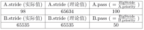

基本思路
【提示】请先看练习2中提到的论文, 理解后在看下面的内容。
考察 round-robin 调度器，在假设所有进程都充分使用了其拥有的 CPU 时间资源的情况下，所有进程得到的 CPU 时间应该是相等的。但是有时候我们希望调度器能够更智能地为每个进程分配合理的 CPU 资源。假设我们为不同的进程分配不同的优先级，则我们有可能希望每个进程得到的时间资源与他们的优先级成正比关系。Stride调度是基于这种想法的一个较为典型和简单的算法。除了简单易于实现以外，它还有如下的特点：
可控性：如我们之前所希望的，可以证明 Stride Scheduling对进程的调度次数正比于其优先级。
确定性：在不考虑计时器事件的情况下，整个调度机制都是可预知和重现的。该算法的基本思想可以考虑如下：
为每个runnable的进程设置一个当前状态stride，表示该进程当前的调度权。另外定义其对应的pass值，表示对应进程在调度后，stride 需要进行的累加值。
每次需要调度时，从当前 runnable 态的进程中选择 stride最小的进程调度。
对于获得调度的进程P，将对应的stride加上其对应的步长pass（只与进程的优先权有关系）。
在一段固定的时间之后，回到 2.步骤，重新调度当前stride最小的进程。
可以证明，如果令 P.pass =BigStride / P.priority 其中 P.priority 表示进程的优先权（大于 1），而 BigStride 表示一个预先定义的大常数，则该调度方案为每个进程分配的时间将与其优先级成正比。证明过程我们在这里略去，有兴趣的同学可以在网上查找相关资料。将该调度器应用到 ucore 的调度器框架中来，则需要将调度器接口实现如下：
init:
初始化调度器类的信息（如果有的话）。
初始化当前的运行队列为一个空的容器结构。（比如和RR调度算法一样，初始化为一个有序列表）
enqueue
初始化刚进入运行队列的进程 proc的stride属性。
将 proc插入放入运行队列中去（注意：这里并不要求放置在队列头部）。
dequeue
从运行队列中删除相应的元素。
pick next
扫描整个运行队列，返回其中stride值最小的对应进程。
更新对应进程的stride值，即pass = BIG_STRIDE / P->priority; P->stride += pass。
proc tick:
检测当前进程是否已用完分配的时间片。如果时间片用完，应该正确设置进程结构的相关标记来引起进程切换。
一个 process 最多可以连续运行 rq.max_time_slice个时间片。
在具体实现时，有一个需要注意的地方：stride属性的溢出问题，在之前的实现里面我们并没有考虑 stride 的数值范围，而这个值在理论上是不断增加的，在 stride溢出以后，基于stride的比较可能会出现错误。比如假设当前存在两个进程A和B，stride属性采用16位无符号整数进行存储。当前队列中元素如下（假设当前运行的进程已经被重新放置进运行队列中）：

此时应该选择 A 作为调度的进程，而在一轮调度后，队列将如下：

可以看到由于溢出的出现，进程间stride的理论比较和实际比较结果出现了偏差。我们首先在理论上分析这个问题：令PASS_MAX为当前所有进程里最大的步进值。则我们可以证明如下结论：对每次Stride调度器的调度步骤中，有其最大的步进值STRIDE_MAX和最小的步进值STRIDE_MIN之差：
STRIDE_MAX – STRIDE_MIN <= PASS_MAX
提问 1：如何证明该结论？
有了该结论，在加上之前对优先级有Priority > 1限制，我们有STRIDE_MAX – STRIDE_MIN <= BIG_STRIDE,于是我们只要将BigStride取在某个范围之内，即可保证对于任意两个 Stride 之差都会在机器整数表示的范围之内。而我们可以通过其与0的比较结构，来得到两个Stride的大小关系。在上例中，虽然在直接的数值表示上 98 < 65535，但是 98 - 65535 的结果用带符号的 16位整数表示的结果为99,与理论值之差相等。所以在这个意义下 98 > 65535。基于这种特殊考虑的比较方法，即便Stride有可能溢出，我们仍能够得到理论上的当前最小Stride，并做出正确的调度决定。
提问 2：在 ucore 中，目前Stride是采用无符号的32位整数表示。则BigStride应该取多少，才能保证比较的正确性？